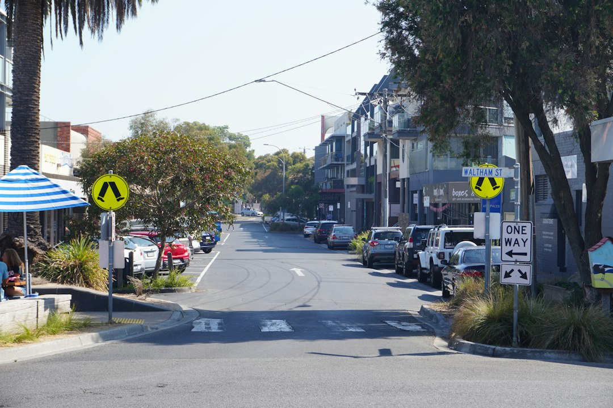

A Melbourne switchboard replacement is usually scoped after a licensed electrician checks the board, circuits and wiring. The published cost guide gives $800 to $3,500+ for a single-phase upgrade and $3,000 to $5,000+ for three-phase work, depending on circuit count, wiring condition and complexity. The finished job should include modern circuit protection and a Certificate of Electrical Safety, with prescribed main switchboard work independently inspected.
For Melbourne homeowners comparing switchboard replacement melbourne options, the useful starting point is the age of the board, the type of protection fitted and what future electrical loads may need.
Switchboard Replacement Melbourne Explained
Switchboard Upgrades Melbourne describes the first real decision as an assessment of the existing board, not a guess from a suburb or a photo alone. Older Melbourne homes may still have ceramic fuse carriers, rewireable fuses, limited spare capacity and no RCD protection. The assessing electrician checks the switchboard, wiring and circuits before recommending a simple swap, a wider upgrade or a more involved three-phase scope.
The signs worth noting before a quote are practical: fuses that keep blowing, circuits that trip when common appliances are used together, no safety switches, visible age, or a board that may have asbestos backing. These details help separate a straightforward fuse box replacement from a job that needs extra handling, more circuit work or future capacity for solar, a smart meter or new appliances.
Safety switches, breakers and RCBO choices
A modern board usually replaces rewireable fuses with circuit breakers and RCD safety switches. The source guide explains that an RCD safety switch is designed to cut power when it detects current leaking to earth. Some boards may instead use RCBOs, which combine overload protection and safety switch protection in one device.
Homeowners do not need to choose the device brand or final circuit layout before the visit. A better quote question is whether each relevant circuit will have modern protection, whether the board will leave room for future circuits, and whether any existing wiring condition changes the scope. For another concise overview of the same Melbourne topic, see this switchboard replacement guide for Melbourne homes.
When single-phase is enough and when three-phase appears
Most homes are described as running on single-phase power, and a single-phase switchboard upgrade commonly means replacing old fuses with modern circuit breakers and safety switches, plus allowing room for future circuits. The published guide gives a typical range of $800 to $3,500+, shaped by circuit count and existing wiring condition.
Three-phase work is framed differently. Larger homes, workshops and properties with higher-draw appliances may need it, and the source guide says this work is more involved, so it is scoped by the assessing electrician. That is why a three-phase estimate should not be treated as a direct price match against a single-phase board. The published guide gives $3,000 to $5,000+ depending on scope and complexity.
Asbestos-backed boards need a specific quote path
Some older ceramic fuse-type boards can have asbestos backing. The supplied guide says removal and disposal must follow WorkSafe Victoria asbestos rules. It also states that a trained electrician can handle a small, sound, non-friable board within strict limits, while other situations require a licensed asbestos removalist.
That means the quote should identify whether asbestos backing is suspected, who is allowed to remove it, how disposal is handled and whether the board condition changes the work sequence. This is not just a price item. It affects who attends, what can be done on the day and how the electrician completes the upgrade without treating a hidden backing panel as an afterthought.
Paperwork and completion checks
The source page says the electrician completes the upgrade and issues a Certificate of Electrical Safety. It also says Victoria requires that certificate for all electrical installation work, and that a main switchboard replacement is prescribed work, so an independent licensed electrical inspector checks it too under Energy Safe Victoria certificate guidance.
Ask for the quote to state the included scope, the type of board work, whether single-phase or three-phase work is being priced, how many circuits are involved, whether safety switches or RCBOs are included, and how the certificate will be provided. If solar, a smart meter or higher-draw appliances are planned, mention that before the quote is finalised so capacity and compatibility are considered early.
- Describe the current board. Record whether the board has ceramic fuses, visible safety switches, frequent trips or suspected asbestos backing.
- Ask for a scoped quote. Have the electrician assess the switchboard, wiring and circuits before comparing the price with another quote.
- Confirm completion documents. Check that the finished work includes the Certificate of Electrical Safety and any required inspection for prescribed work.
| Situation | What changes | Quote question |
|---|---|---|
| Single-phase upgrade | Old fuses are replaced with modern circuit protection, often with room for future circuits. | How many circuits are included and is the wiring condition likely to alter the scope? |
| Three-phase upgrade | The job is more involved and is scoped around larger loads, workshops or higher-demand properties. | What makes three-phase necessary for this property and what extra work is included? |
| Asbestos-backed board | Removal must follow asbestos handling rules and may require a licensed asbestos removalist. | Who is permitted to remove the backing and is disposal included in the quote? |
| Solar or smart meter planning | The board may need suitable capacity and modern protection before new equipment is added. | Will the upgraded board be compatible with the planned installation? |
Common questions
How much does a Melbourne switchboard upgrade cost? The published guide gives $800 to $3,500+ for a single-phase upgrade and $3,000 to $5,000+ for three-phase work. The final quote depends on circuit count, wiring condition, scope and complexity.
Do older fuse boxes always need replacing? The source guide points to older ceramic fuse-type boards, rewireable fuses, no safety switches and limited spare capacity as common reasons homeowners investigate replacement. A licensed electrician should assess the actual board before recommending the scope.
What if the switchboard has asbestos backing? The guide says some older boards can have asbestos backing and removal must follow WorkSafe Victoria asbestos rules. A trained electrician may handle a small, sound, non-friable board within strict limits, otherwise a licensed asbestos removalist is needed.
What paperwork should be issued after the work? The source page says a Certificate of Electrical Safety is issued on completion. It also says main switchboard replacement is prescribed work, so an independent licensed electrical inspector checks it.
This guide covers Melbourne home switchboard upgrades, replacement scope, safety switches, asbestos-backed boards, cost signals and completion paperwork.